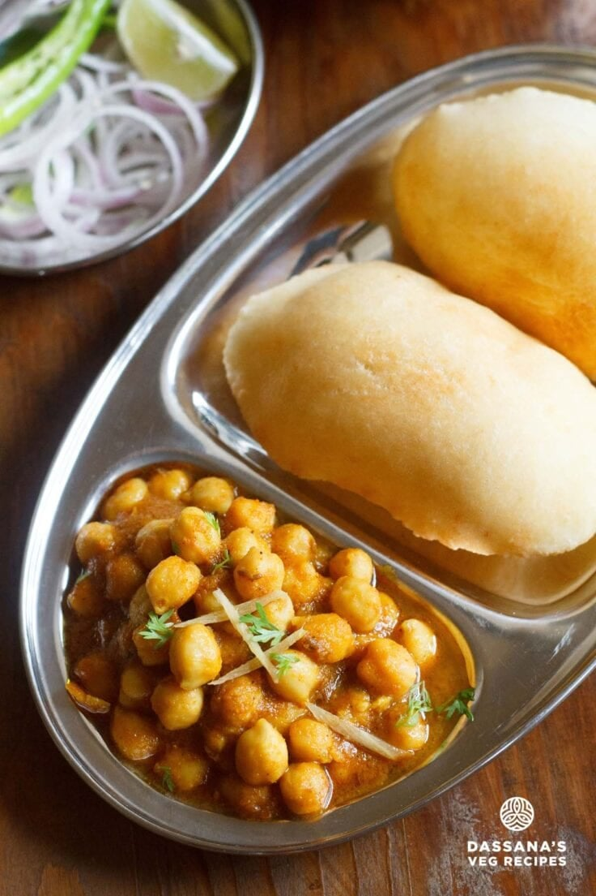

Chole Bhature
⏱ Prep: 25 mins
🔥 Cook: 30 mins
🍽 Serves: 4
Ingredients
- 2 cups boiled chickpeas (chole)
- 2 onions, finely chopped
- 2 tomatoes, pureed
- 1 tbsp ginger-garlic paste
- 1 tsp turmeric powder
- 1 tsp red chili powder
- 1 tsp garam masala
- 2 tbsp oil
- Salt to taste
Bhature Dough
- 2 cups all-purpose flour (maida)
- 4 tbsp yogurt
- 1/2 tsp baking soda
- Water (to knead)
- Oil (for frying)
Steps
- Heat oil in a pan and saute onions until golden.
- Add ginger-garlic paste and cook for 1 minute.
- Add tomato puree, turmeric, chili powder, and salt. Cook until oil separates.
- Add boiled chickpeas and a little water. Simmer for 10 minutes.
- Mix flour, yogurt, baking soda, and knead into a dough. Rest 20 minutes.
- Roll into discs and deep fry until puffed and golden.
- Serve hot with the prepared chole.